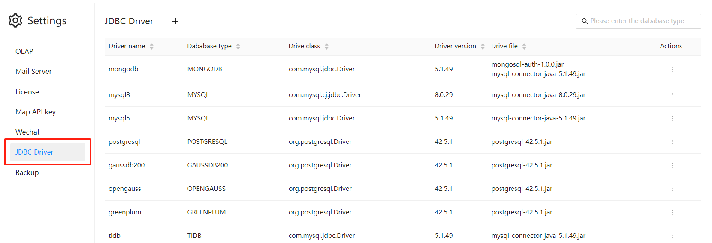
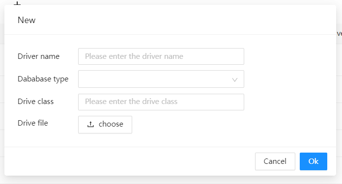
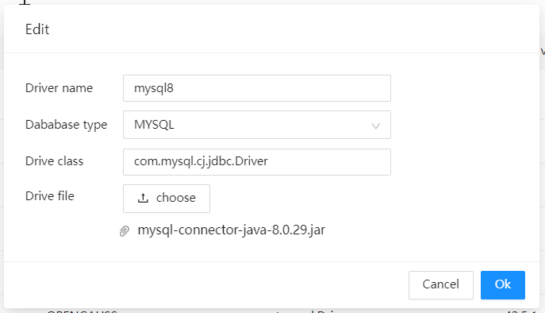

JDBC Driver Management
Datafor supports managing and configuring different versions of JDBC drivers to support various versions of databases. This feature ensures that your database connections are compatible with the corresponding database versions, preventing connection issues due to driver version mismatches.
Instructions
Accessing the Driver Management Interface
Log in to the Datafor platform.
Navigate to the settings page and select "JDBC Driver".

Adding a New JDBC Driver
- Click the "New" button.
In the pop-up window:
Enter the Driver Name.
Select the Database Type (e.g., MySQL, PostgreSQL, etc.).
Fill in the Driver Class information.
Upload the appropriate version of the JDBC driver file (.jar file).
Click the "OK" button to complete the driver addition.

Updating an Existing JDBC Driver
- In the driver management interface, find the driver that needs updating. Click the "Edit" menu.
Upload the new driver file and update other information. Click the "OK" button to complete the driver update.

Deleting a JDBC Driver
In the driver list's action menu, select the "Delete" menu.